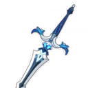
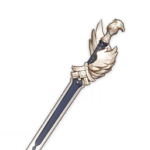

Син Цю

Основная способность - двойной удар мечом, который также дает максимальное количество Мечей дождя. Каждый из них разбивается на части всякий раз, когда Син Цю получает урон, уменьшая его до максимум 24% на трех мечах.
Билд "Поддержка Гидро"
Оружие
Церемониальный меч
После нанесения урона противнику с помощью навыка стихий, навык имеет 40/50/60/70/80% шанс откатить время перезарядки способности. Может срабатывать 1 раз в 30/26/22/18/14 секунд.
или
Меч Фавония
Критические атаки имеют шанс 60/70/80/90/100% создать 1 сферу стихий, которая восстановит 6 энергии для персонажа. Может срабатывать 1 раз каждые 12/10,5/9/7,5/6 секунд.
Артефакты
Церемония древней знати

(2) +20% к урону от взрыва стихии
(4) Использование взрыва стихии увеличивает атаку всех членов группы на 20% на 12 секунд. Этот эффект не суммируется.
или
Эмблема рассечённой судьбы
.png)
(2) +20% к перезарядке энергии
(4) Увеличивает урон взрыва стихий на 25% от перезарядки энергии. Таким образом можно получить максимум 75% дополнительного урона.
Рекомендуемые характеристики артефактов
Основные

Восстановление энергии

Урон Гидро

Шанс критического попадания / Урон
Второстепенные
- 1.Шанс критического попадания / Урон
- 2.Атака%
- 3.Восстановление энергии
- 4.Атака